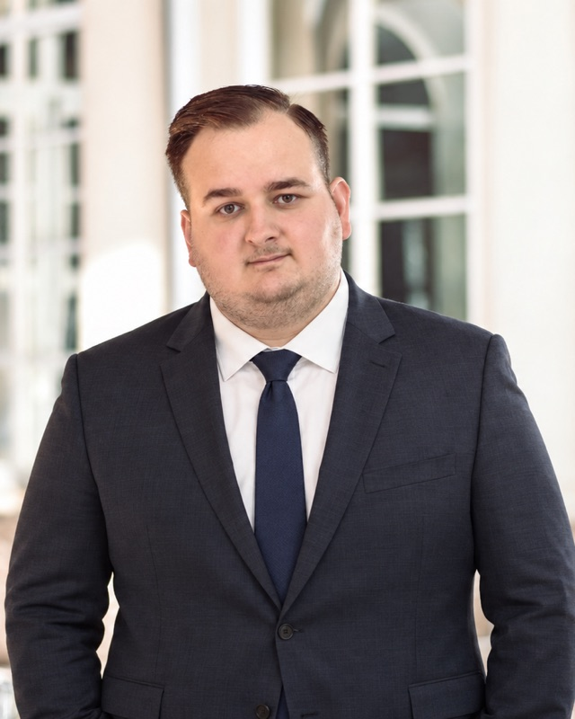

Právnická fakulta UK · Katedra teórie práva a filozofie právaComenius University · Faculty of Law · Legal Theory and Philosophy of Law
Marián Ruňanin
vysokoškolský učiteľ a digitálny ombudsmanlecturer in law and digital ombudsman
Právnik a ekonóm. Učím na Právnickej fakulte Univerzity Komenského a ako digitálny ombudsman rozhodujem spory používateľov s online platformami. Venujem sa slobode prejavu, regulácii digitálnych služieb (DSA) a právnej a politickej filozofii.Lawyer and economist. I teach at the Faculty of Law of Comenius University and, as a digital ombudsman, decide disputes between users and online platforms. My work focuses on freedom of expression, the Digital Services Act (DSA) and legal and political philosophy.

UniverzitaUniversity
Vysokoškolský učiteľLecturer in law
Katedra teórie práva a filozofie práva, Právnická fakulta Univerzity Komenského v BratislaveDepartment of Legal Theory and Philosophy of Law, Faculty of Law, Comenius University in Bratislava
Učím teóriu práva, právnu argumentáciu a interpretáciu práva – s dôrazom na to, ako ich použiť v praxi. Vo výskume sa venujem slobode prejavu, nariadeniu o digitálnych službách a dezinformáciám.I teach legal theory, legal argumentation and interpretation, with an emphasis on how to use them in practice. My research covers freedom of expression, the Digital Services Act and disinformation.
- PredmetyCoursesTeória práva I.
Argumentácia v práve a interpretácia práva
Základy teórie práva a ústavného právaLegal Theory I
Legal Argumentation and Interpretation
Foundations of Legal Theory and Constitutional Law - DizertáciaDissertationDemokracia a dezinformácie (2026)Democracy and Disinformation (2026)
- KonzultácieOfficekancelária č. 613 NB, po dohode e-mailomroom 613 NB, by appointment
Sloboda prejavu onlineFree speech online
Digitálny ombudsmanDigital Ombudsman
Ombudsman a člen správnej rady orgánu mimosúdneho riešenia sporov certifikovaného podľa čl. 21 DSAOmbudsman and board member of an out-of-court dispute settlement body certified under Art. 21 DSA
Zablokovali vám účet, obmedzili dosah alebo zmazali príspevok? Digitálny ombudsman nezávisle posudzuje spory medzi používateľmi a online platformami, ako sú Facebook, Instagram, YouTube, TikTok či LinkedIn.Has your account been blocked, your reach restricted or your post removed? The Digital Ombudsman independently reviews disputes between users and online platforms such as Facebook, Instagram, YouTube, TikTok and LinkedIn.
- CenaCostpre používateľov bezplatne, náklady konania znáša platformafree for users – the platform bears the costs
- RozhodnutieDecisiondo 90 dní od doručenia úplnej sťažnostiwithin 90 days of a complete complaint
- CertifikáciaCertified byRada pre mediálne služby, platí v celej EÚthe Slovak Media Services Council, valid across the EU
Môj profil na stránke Digitálneho ombudsmanaMy profile at the Digital Ombudsman
O mneAbout
Som právnik a ekonóm s doktorátom z teórie a dejín štátu a práva. Od septembra 2026 pôsobím ako vysokoškolský učiteľ na Katedre teórie práva a filozofie práva Právnickej fakulty Univerzity Komenského v Bratislave, kde učím teóriu práva, právnu argumentáciu a interpretáciu práva a ich uplatnenie v praxi.
Vo výskume sa venujem najmä slobode prejavu a nariadeniu o digitálnych službách (DSA) – moderácii obsahu na online platformách, dezinformáciám a ústavným limitom zásahov štátu do prejavu. Pohybujem sa na pomedzí práva, ekonómie a právnej a politickej filozofie a zaoberám sa aj základnými právami a slobodami.
Od roku 2025 som digitálnym ombudsmanom a členom správnej rady Digitálneho ombudsmana – česko-slovenského orgánu mimosúdneho riešenia sporov certifikovaného podľa čl. 21 DSA, ktorý rozhoduje spory medzi používateľmi a online platformami.
Akademickú prácu dopĺňajú skúsenosti z praxe, najmä z práva územného plánovania, stavebného a finančného práva. Pôsobil som v Národnej rade SR ako asistent poslancov Vladimíry Marcinkovej a Tomáša Lehotského, na ministerstve, v advokácii a v ombudsmanských inštitúciách. Ako právny analytik som spolupracoval s Útvarom mestských stratégií a analýz Hlavného mesta SR Bratislavy a v tejto spolupráci pokračujem. O týchto témach píšem aj pre odborný časopis Expert pre stavebné úrady.
I am a lawyer and economist with a PhD in the theory and history of state and law. Since September 2026 I have been a lecturer at the Department of Legal Theory and Philosophy of Law, Faculty of Law, Comenius University in Bratislava, where I teach legal theory, legal argumentation and interpretation, and how to apply them in practice.
My research focuses on freedom of expression and the Digital Services Act (DSA) – content moderation on online platforms, disinformation and the constitutional limits of state interference with speech. I work at the intersection of law, economics and legal and political philosophy and also study fundamental rights and freedoms.
Since 2025 I have served as a digital ombudsman and board member of the Digital Ombudsman – a Czech-Slovak out-of-court dispute settlement body certified under Article 21 of the DSA, which decides disputes between users and online platforms.
My academic work is complemented by practical experience, mainly in spatial planning, building and financial law. I worked in the Slovak Parliament as an assistant to MPs Vladimíra Marcinková and Tomáš Lehotský, at a ministry, in a law firm and in ombudsman institutions. As a legal analyst I worked with the Urban Strategies and Analyses Unit of the City of Bratislava, a cooperation that continues. I also write on these topics for the professional journal Expert pre stavebné úrady.
Vybrané publikácieSelected publications
18 vedeckých publikácií · 8 citácií · 2 v databáze Scopus · 1 vo Web of Science18 academic publications · 8 citations · 2 indexed in Scopus · 1 in Web of Science
-
2026
Demokracia a dezinformácie
Dizertačná prácaPhD dissertation · Univerzita Komenského, Právnická fakultaComenius University, Faculty of Law, 2026, 277 s.
-
2025
Úloha štátu pri identifikácii dezinformácií: právne limity a ústavné aspekty
Banskobystrické zámocké dni práva. Banská Bystrica: Belianum, 2025, s. 871–883.
-
2025
On the regulation of selected externalities in the modern urban environment in Slovakia
s J. Mazúrom a V. Jakušovou · Bratislava Law Review, roč. 9, č. 2 (2025), s. 33–60 · Web of Science, Scopus
-
2025
Medzi formálnymi požiadavkami a skutočnou vykonateľnosťou: analýza nedostatkov nariadenia o digitálnych službách v slovenskom právnom prostredí
s I. Slobodom · Bratislavské právnické fórum 2025. Bratislava: PraF UK, 2025, s. 274–290.
Z bloguFrom the blog
Komentáre a eseje, ktoré píšem pre Denník N.Commentary and essays I write for Denník N (in Slovak).
Zmienky v médiáchIn the media
Rozhovory, citácie a vystúpenia na podujatiach.Interviews, quotes and public talks.
-
Protimonopolný úrad preveruje trh s klimatizáciami na Slovensku. Zákazníci môžu byť poškodení
Správy STVR · citovaný ako právnik k náhrade škody spôsobenej kartelomSTVR News (Slovak public broadcaster) · quoted as a lawyer on compensation for cartel damages
-
Budoucnost svobody slova: Diskuze, která otevřela důležitá témata
Strategeo Institute · panelista konferencie Budoucnost svobody slova (PressCentrum ČTK, Praha), panel o regulácii platforiem a DSAStrategeo Institute · panellist at the Future of Free Speech conference (ČTK PressCentre, Prague), panel on platform regulation and the DSA
Pre študentov a študentkyFor students
Konzultácie, výučba, témy záverečných prác a odpovede na časté otázky na jednom mieste.Office hours, teaching, thesis topics and answers to common questions in one place.
OznamyAnnouncements
Oznamy a moje skupinyAnnouncements & my groups
Aktuálne oznamy, dochádzka a body tímov pre skupiny Po 7:45, Po 10:00 a St 15:15.Current announcements, attendance and team points for the Mon 7:45, Mon 10:00 and Wed 15:15 groups.
→KonzultácieConsultations
Kedy a kde ma nájdeteWhen and where to find me
Kancelária č. 613 NB a ako si dohodnúť konzultáciu.Room 613 NB and how to book a consultation.
→VýučbaTeaching
Predmety a informačné listyCourses and course sheets
Teória práva I., Argumentácia v práve a interpretácia práva, Základy teórie práva a ústavného práva.Legal Theory I, Legal Argumentation and Interpretation, Foundations of Legal Theory and Constitutional Law.
→Záverečné práceTheses
Témy a ako začaťTopics and how to start
Sloboda prejavu, teória a filozofia práva – aj vlastné návrhy.Free speech, legal theory and philosophy – your own ideas welcome.
→KontaktContact
- FakultnýUniversity
- marian.runanin@flaw.uniba.sk
- OsobnýPersonal
- marian.runanin@gmail.com
Odpovedám spravidla do troch pracovných dní.I usually reply within three working days.
PracoviskoOffice
Právnická fakulta UKFaculty of Law, Comenius University
Katedra teórie práva a filozofie právaDept. of Legal Theory and Philosophy of Law
Šafárikovo námestie 6, 810 00 BratislavaŠafárikovo námestie 6, 810 00 Bratislava, Slovakia
Kancelária č. 613 NBRoom 613 NB
Spor s platformou?Dispute with a platform?
Digitálny ombudsmanDigital Ombudsman
Sťažnosti, prosím, podávajte cezPlease file complaints via the oficiálny formulárofficial form, nie e-mailom – len tak môže konanie začať., not by e-mail – that is the only way a case can be opened.